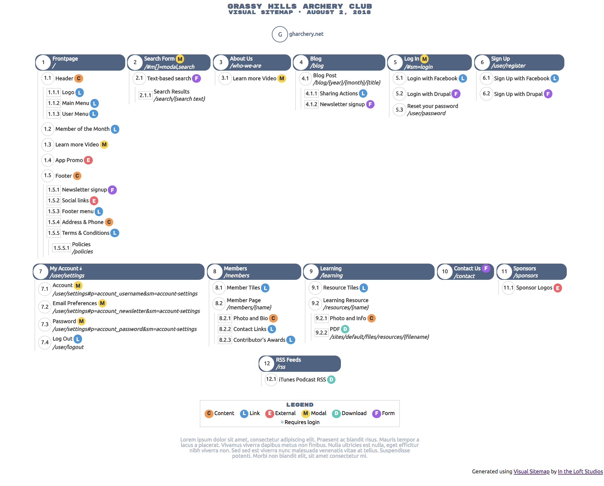

Using a very simple JSON file schema to define the structure of your website, this project uses that structure to generate a beautiful, visual HTML sitemap. The final document has all icons and CSS embedded in it and can be shared with other team members easily. The primary fonts use Google Fonts and require internet access, however the fallback fonts work just fine offline.
Take a look at example.json to see what a definition file looks like.
Open example.html in a browser to see the example visual sitemap.
vismap {FILENAME}.json -cvismap {FILENAME}.json to compile the sitemap.To be able to use the commands from any directory in your CLI you may want to install this globally.
composer global require aklump/visual-sitemap
Make sure you have the composer bin dir in your PATH. The default value is ~/.composer/vendor/bin, but you can check the value that you need to use by running composer global config bin-dir --absolute.
To check this you must open ~/.bash_profile (or ~/.bashrc); you're looking for a line that looks like the following, if you can't find, you'll need to add it.
export PATH=~/.composer/vendor/bin:$PATH
cd /your/project/folder
composer require aklump/visual-sitemap
Test your installation by typing vismap in your terminal, you should see:
Argument 1 must point to a configuration json file.
Create the configuration JSON file following the schema. Use example.json and quick_start.json as guides. If you wish to use the CLI to create the file (which copies and renames quick_start.json) do the following:
cd /the/dir/to/contain/the/config
vismap FILENAME.json -c
You can also refer to schema.json, which uses JSON Schema to define the format of the configuration file.
vismap sitemap.json. sitemap.html will be created. If sitemap.html already exists, you will need to use the -f flag to overwrite it, e.g. vismap sitemap.json -f.vismapwatch sitemap.json for this. Again, use the -f flag if the HTML file already exists.--out={filepath} to control the output location relative to the source file. You may also use an absolute path beginning with a /.If you find this project useful... please consider making a donation.
The schema is very simple, a nested group of objects, each following this pattern:
{
"title": "",
"more": "",
"type": "",
"path": "",
"sections": []
}
The top-level node only, takes the following additional keys:
baseUrl Used to generate URL tokens.footer Optional footer text.subtitle Optional subtitle.timezone The timezone name to localize to.The sections is where you nest the nodes, like this:
{
"sections": [
{
"title": "",
"more": "",
"type": "",
"path": "",
"sections": [
{
"title": "",
"more": "",
"type": "",
"path": "",
"sections": []
}
]
},
{
"title": "",
"more": "",
"type": "",
"path": "",
"sections": []
}
]
}
The following are the valid section types. You may omit the type and page is implied, which is the default type.
page This represents a page on the site, with a unique path.content This represents content on a page.link This represents a link to another page on the site.external This represents a link to another, external website.modal This represents a modal or popoup.download This represents a download file.form This represents a form.Path should be a relative link and begin with /. Not all resources should use path. Use URL placeholders, e.g. user/{user}.
Optional, URL hyperlink to anything that provides more info for the section, a Trello card, website, documentation, etc. This makes the title clickable. You may use tokens in this field, the following are available:
| token | description |
|---|---|
| {{ url }} | An absolute URL generated using the baseUrl and the path of the section |
| {{ path }} | The path of the section |
| {{ base }} | The value of the baseUrl configuration variable |
You may override the default templates by creating your own overrides directory. So if wanted to refactor html.twig then first copy it to YOUR_THEME_DIR/html.twig and then modify as desired.
For user styles, add a file called style.css to the same directory and it will be included in the sitemap.
For these themes to be discovered you must pass the --theme=/PATH/TO/DIRECTORY parameter, e.g.
. /vendor/bin/vismap website.json --theme=templates
In the above example you will have a directory structure something like the following, and you have installed Visual Sitemap at the project level. website.json is your config file. You have created your own theme and styles in templates.
.
├── templates
│ ├── html.twig
│ └── style.css
├── vendor
│ └── bin
│ └── vismap
└── website.json